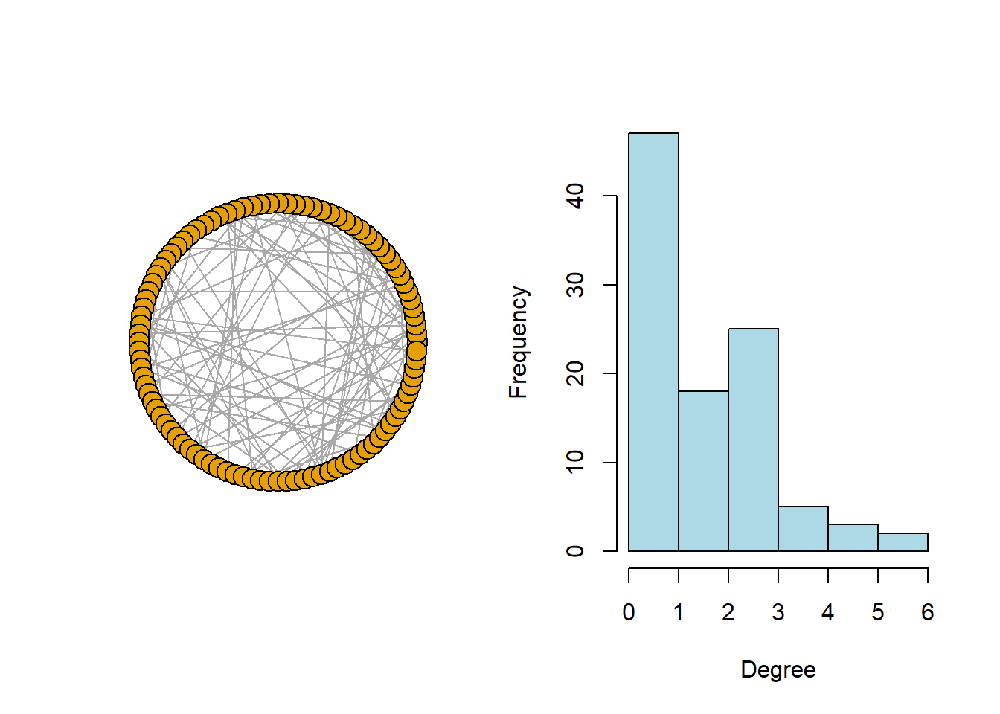
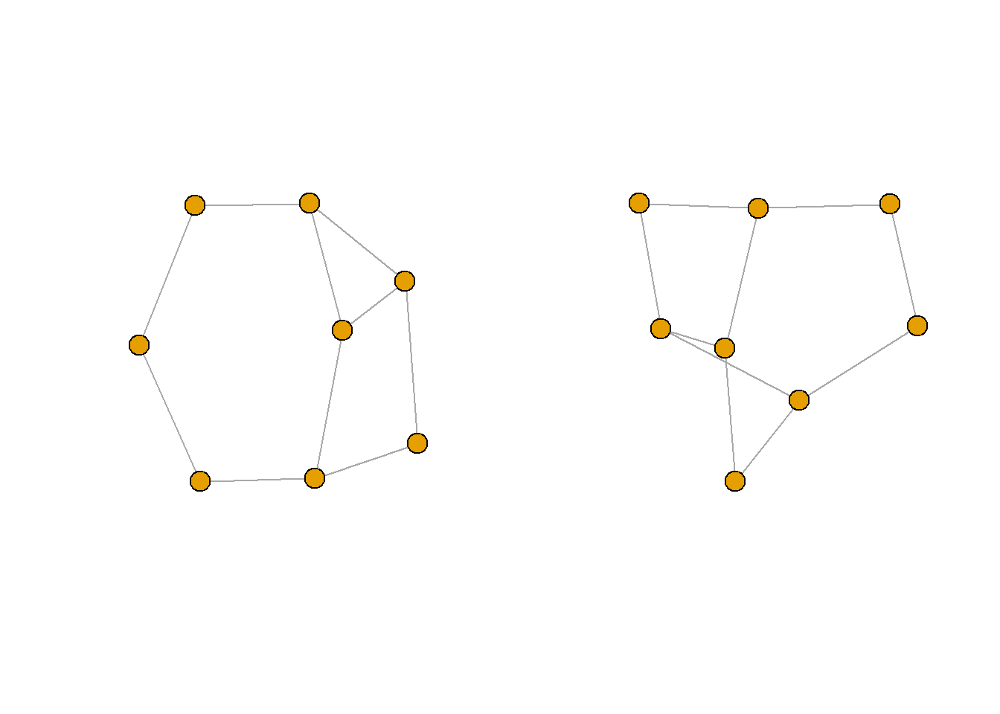
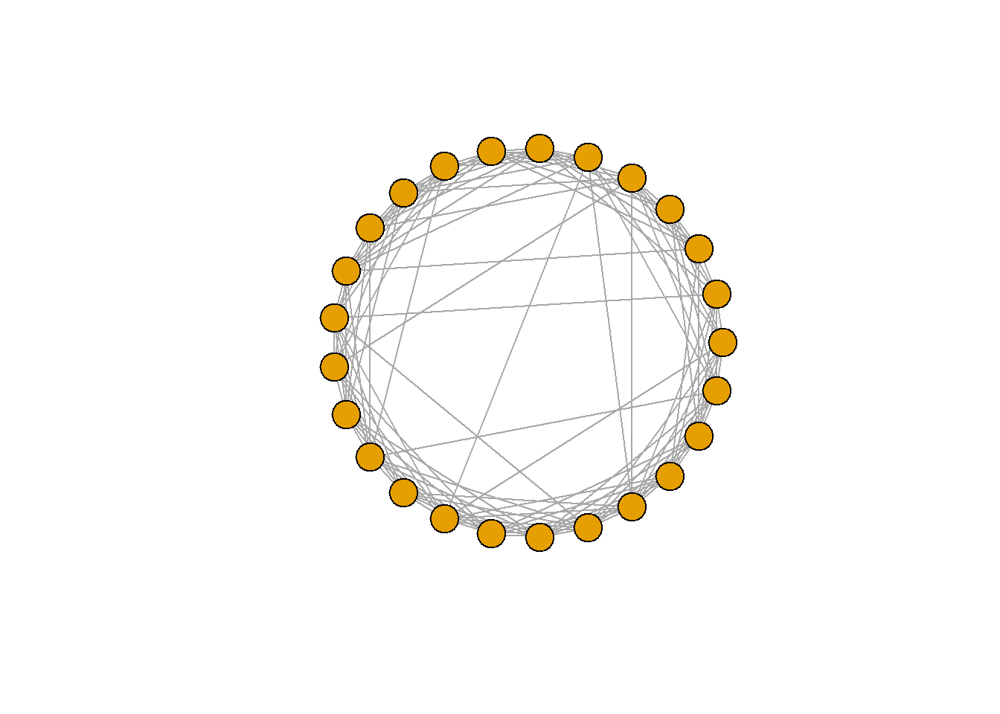
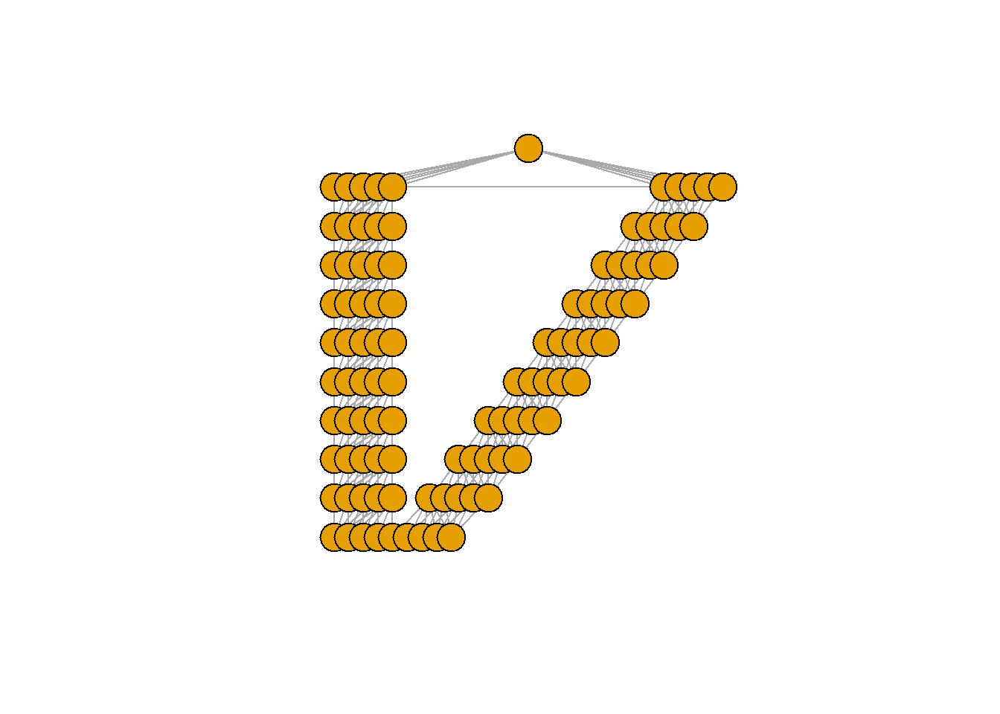
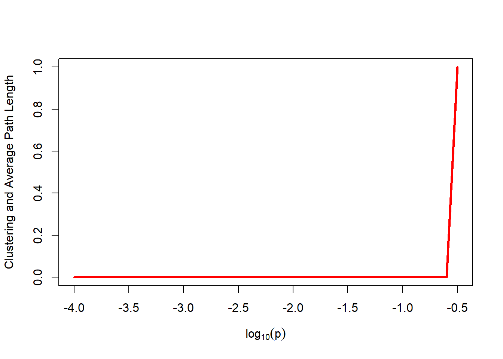
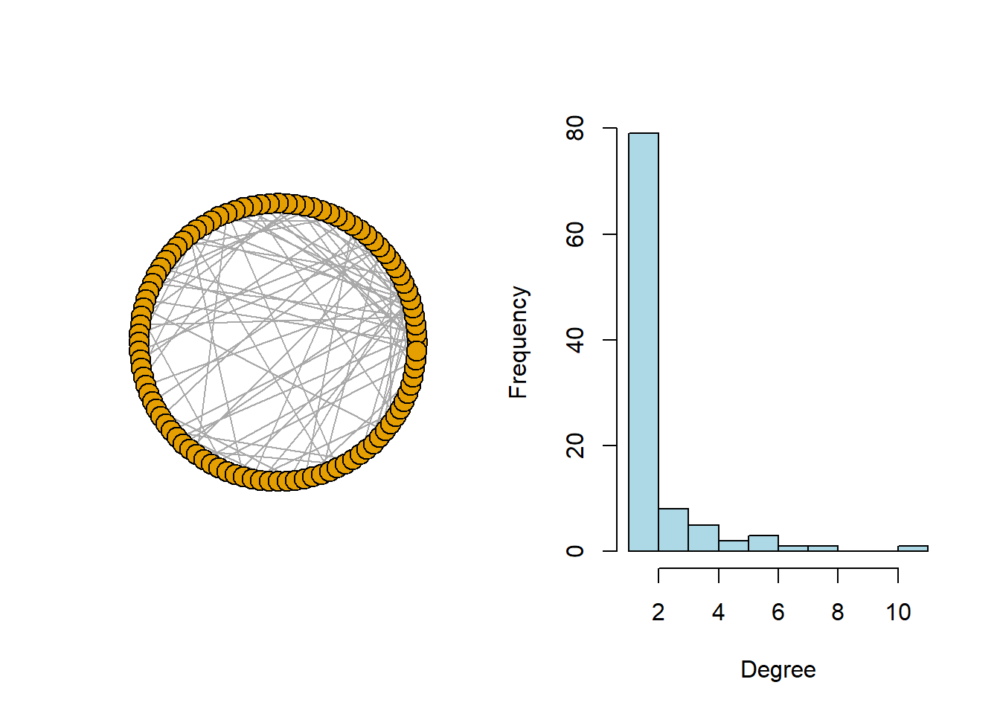
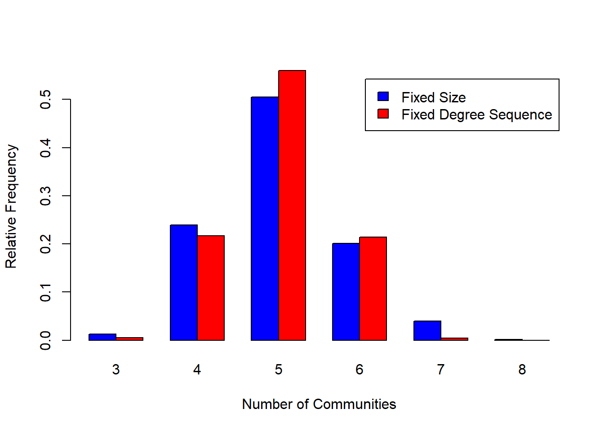

7.4 Mathematical Models for Network Graphs
- By a model for a network graph we mean effectively a collection
- \(G\) 는 가능한 그래프들의 collection (혹은 ‘ensemble’)
- \(P_\theta\)는 \(G\)의 확률분포 (간단하게 쓰면 \(\cdot_\theta\) 생략하고 \(P\)만 씀)
- \(\theta\)는 \(\Theta\) 내부에서 가능한 값들 안에서 펼쳐져있는 (ranging over) 패러미터들(패러미터값들)의 벡터
\[ \Big \{ P_\theta (G), \; G \in \mathcal G \; \; : \; \; \theta \in \Theta \Big \} \]
- Variety of Purposes
- The testing for ‘significance’ of a pre-defined characteristic(s) in a given network graph
- The study of proposed mechanisms for generating certain commonly observed properties in real-world networks (such as broad degree distributions or small-world effects),
- The assessment of potential predictive factors of relational ties.
The richness of network graph modeling derives largely from how we choose to specify P(·), with methods in the literature ranging from the simple to the complex.
It is useful for our purposes to distinguish, broadly speaking, between models defined more from (i) a mathematical perspective, versus (ii) a statistical perspective. • Those of the former class tend to be simpler in nature and more amendable to mathematical analysis yet, at the same time, do not always necessarily lend themselves well to formal statistical techniques of model fitting and assessment. • On the other hand, those of the latter class typically are designed to be fit to data, but their mathematical analysis can be challenging in some cases. • Nonetheless, both classes of network graph models have their uses for analyzing network graph data.
7.4.1 Classical Random Graph Models
random graph model이라는 용어는 collection \(\mathcal G\)과 \(\mathcal G\)에 대한 uniform probability \(P(\cdot)\)을 묶어 일컬음. 수학적 관점에서 가장 잘 정의된 네트워크 그래프 모델.
주어진 order와 size를 따르는 그래프에 대한 모든 후보군에 동일 확률 부여. \(|V|=N_v\), \(|E| = N_e\)를 만족하는 모든 그래프 \(G=(V,E)\)의 collection \(\mathcal G_{N_v, N_e}\)을 정의하고, 각각의 \(G \in \mathcal G_{N_v, N_e}\)에 확률 \(P(G) = {N \choose N_e}^{-1}\)을 부여함. 이때 \(N= {N_v \choose 2}\)는 서로 다른 vertex 2개를 묶은 쌍의 총 숫자.
\(\mathcal G_{N_v, N_e}\)의 변용이 실전에서는 더 자주 보임. 이 공식에서, \(\mathcal G_{N_v, p}\)는 order \(N_v\)의 모든 그래프 \(G\)로 구성되어 있다. 이는 서로 다른 vertex의 쌍에 \(p \in (0,1)\)의 확률로 edge 1개를 독립적으로 부여하는 것으로 얻어질 수 있다. 이러한 종류의 모델은 Bernoulli random graph model라고 불림. \(p\)가 \(N_v\)의 적절하게 정의된 함수이며, \(N_e \sim p N_v^2\)하면, 이 모델들의 두 클래스는 large \(N_v\)와 거의 동치된다.
The function erdos.renyi.game in igraph can be used to simulate classical random graphs of either type. The choice of Nv = 100 vertices and a probability of p = 0.02 of an edge between any pair of vertices.
library(sand)g.er = erdos.renyi.game(100, 0.02)
par(mfrow = c(1, 2))
plot(g.er, layout = layout.circle, vertex.label = NA)
hist(igraph::degree(g.er), col = "lightblue", xlab = "Degree",
ylab = "Frequency", main = "")
is.connected(g.er)
## [1] FALSE
table(sapply(decompose.graph(g.er), vcount))
##
## 1 2 6 79
## 13 1 1 1\(\exists c>1:p = \frac{c}{N_v}\)가 성립한다면, classical random graph \(G\)는 giant component를 보유할 확률이 높다.
위와 \(p\)를 동일하게 정의한다면, \(c>0\)에 대해, degree distribution은 large \(N_v\)에 대해 \(POI(c)\)로 잘 모사된다. 이게 사실이라는 건 직관적으로 보이기도 쉽다. 아무 vertex나 하나 뽑았을 때 이의 degree가 \(B(N_v-1, p)\)를 따르기 때문이다. 이는 곧 mean degree는 \(p(N_v-1)\)에 근접한다는 소리.
classical random graph의 다른 성질은 vertex 쌍 사이에서 shortest path 위에는 상대적으로 적은 숫자의 vertex가 존재한다는 것이며 이로 인해 clustering도 low하다는 것이다. path가 길어야 상대적으로 공간이 넉넉해서 여러개의 vertex가 그 위에 안착할 가능성이 높은데 짧으면 그만큼 공간 좁아서 없는게 정상일테니까.
average.path.length(g.er)
## [1] 5.644495
diameter(g.er)
## [1] 12
transitivity(g.er)
## [1] 0.01639344
7.4.2 Generalized Random Graph Models
이하의 성질을 갖고, fixed order \(N_v\)를 따르는 모든 그래프의 collection \(\mathcal G\)를 정의한다. 각 그래프 \(G \in \mathcal G\)에 동일 확률 부여
가장 자주 부여되는 성질은 fixed degree sequence의 그것. \(\mathcal G\)를 모든 그래프 \(G\)의 collection으로 정의, 이때 이는 미리 정해진 degree sequence를 따름. 이를 ordered form으로 적으면 \(\{d_{(1)}, \cdots, d_{(N_v)} \}\). 이 조건을 따르면서도 다른 모양의 그래프는 얼마든지 그려지며 따라서 isomorphic이 아님.
degs = c(2, 2, 2, 2, 3, 3, 3, 3)
g1 = degree.sequence.game(degs, method = "vl")
g2 = degree.sequence.game(degs, method = "vl")
par(mfrow = c(1, 2))
plot(g1, vertex.label = NA)
plot(g2, vertex.label = NA)
# 해당 케이스에선 N_v=8 vertex, 이중 절반은 degree=2,
# 나머지 절반은 3.graph.isomorphic(g1, g2)
## [1] FALSE
c(ecount(g1), ecount(g2))
## [1] 10 10고정된 숫자의 vertex \(N_v\)에서 fixed degree sequence를 따르는 랜덤 그래프들의 collection들은 모두 egde 숫자 \(N_e\)로 동일하다. 이는 mean degree of sqeuence \(\{d_{(1)}, \cdots, d_{(N_v)}\}\)는 \(\tilde d = \frac{2N_e}{N_v}\)이니까.
따라서 이 collection은 랜덤 그래프의 collection \(\mathcal G_{N_v , N_e}\) 안에 strictly 들어있음. 따라서 degree sequence의 가정된 형태의 추가는 원본 collection \(\mathcal G_{N_v , N_e}\)에 조건부 분포를 걸어 우리의 모델을 특정짓은 것과 동일함. 다른말로 이는 degree sequence에 의해 제약되지 않은 부분은 얼마든지 vary 가능하다는 것을 의미.
data(yeast)
degs = igraph::degree(yeast)
fake.yeast = degree.sequence.game(degs, method = c("vl"))
all(igraph::degree(yeast) == igraph::degree(fake.yeast))
## [1] TRUE
diameter(yeast)
## [1] 15
diameter(fake.yeast)
## [1] 8
transitivity(yeast)
## [1] 0.4686178
transitivity(fake.yeast)
## [1] 0.04057685하지만 이렇게 고삐를 풀어버리면 원본 네트워크의 직경은 시뮬레이션된 물건의 2배에 달하며 사실상 만들어두었던 clustering들도 다 날아가버렸음. 원칙적으로 class \(\mathcal G\)의 정의를 제한하는 편이 훨씬 쉬우며 그렇기에 degree sequence 이외의 다른 추가적인 특성들은 그냥 고정해버림. 이러한 collection으로부터 랜덤 그래프들 \(\mathcal G\)을 생산해내는데에는 MCMC 방법론이 유명하다. 이때 MC에 의해 액세스되는 상태들 그 자체 각각들이 graph \(\mathcal G\)에 해당함.
7.4.3 Network Graph Models Based on Mechanisms
모던 네트워크 그래프 모델링에서 가장 중요한 혁명 중 하나가 전통적인 랜덤 그래프 모델에서 실제 세계의 성질을 모사하는 쪽으로 옮겨갔다는 거임. 이건 그냥 간단한 몇몇 메커니즘 도입하는 것으로 성공되었음.
7.4.3.1 Small-World Models
- small-world network
대부분의 node가 다른 node들과 이웃이 아닌 케이스. 그러나 다른 node를 작은 횟수 거치면 모든 노드에 액세스 가능한 케이스. 해당하는 케이스 생산하는 방법으로 lattice 구조로 우선 잔 후에 적은 확률 부여해서 무작위로 각 node로 rewiring.
We begin with a set of Nv vertices, arranged in a periodic faction, and join each vertex to r of its neighbors to each side. For each edge, independently and with probability p, one end of that edge will be moved to be incident to another vertex, where that new vertex is chosen uniformly, but with attention to avoid the construction of loops and multi-edges.
추가적인 조치 없이 lattice만 단독으로 있으면 (\(p=0\) 상황에서 생산됨) 이 경우에는 clustering의 양이 상당하게 나오지만, vertex간의 거리는 non-trivial해짐. 이런 lattice에 상대적으로 적은 숫장 edge 대상으로 rewiring을 거치는 것만으로 vertex 사이의 거리를 극적으로 줄일 수 있다. 이때 clustering level은 높게 유지된다는 것이 포인트. 이 효과는 \(p\)가 극적으로 작더라도 여전히 얻어질 수 있다.
g.ws = watts.strogatz.game(1, 25, 5, 0.05)
plot(g.ws, layout = layout.circle, vertex.label = NA)
g.lat100 = watts.strogatz.game(1, 100, 5, 0)
transitivity(g.lat100)
## [1] 0.6666667
plot(g.lat100, layout = layout.reingold.tilford, vertex.label = NA)
diameter(g.lat100)
## [1] 10
average.path.length(g.lat100)
## [1] 5.454545
g.ws100 = watts.strogatz.game(1, 100, 5, 0.05)
diameter(g.ws100)
## [1] 4
average.path.length(g.ws100)
## [1] 2.701616
transitivity(g.ws100)
## [1] 0.5070516steps = seq(-4, -0.5, 0.1)
len = length(steps)
cl = numeric(len)
apl = numeric(len)
ntrials = 100
for (i in 1:len) {
cltemp = numeric(ntrials)
apltemp = numeric(ntrials)
for (j in 1:ntrials) {
g = watts.strogatz.game(1, 1000, 10, 10^steps[i])
cltemp[j] = transitivity(g)
apltemp[j] = average.path.length(g)
}
}
cl[i] = mean(cltemp)
apl[i] = mean(apltemp)
plot(steps, cl/max(cl), ylim = c(0, 1), lwd = 3, type = "l",
col = "blue", xlab = expression(log[10](p)), ylab = "Clustering and Average Path Length")
lines(steps, apl/max(apl), lwd = 3, col = "red")
이 결과는 (normalized 평균적인 path의 길이들과 clustering coefficient들의) 개략적인 기댓값을 p 대비로 plot한 것으로, p가 엄청나게 극단적인 값으로 가지 않은 이상 네트워크가 계속 높은 수준의 clustering을 유지하면서 작은 평균 거리를 보이는 것이 확인된다.
7.4.3.2 Preferential Attachment Models
대부분의 네트워크는 시간에 따라 변화함. 주어진 시간 \(t\)에 네트워크가 어떻게 변화하는지는 vertex preferences, fitness, age 등에 따라서든 다양. Preferential attachment는 많은 노드와 연결된 대형 노드가 추가적인 link를 확보할 가능성이 높다는 것. SNS에서의 셀럽 생각하면 됨.
undirected 네트워크의 Barabasi-Albert (BA) model 은 다음과 같음.
시작 vertex \(N_v^{(0)}\), 시작 edge \(N_e^{(0)}\) 가지는 시작 그래프 \(G^{(0)}\)로 시작.
각 시간 \(t = 1, 2, \cdots\)에서 \(G^{(t-1)}\) 기반으로 \(G^{(t)}\) 생산. 추가적인 vertex 를 넣되 이 추가되는 vertex들의 degree는 \(m \ge 1\)이고, \(m\)개의 새로운 edge들이 \(m\)개의 서로 다른 vertex에 들러붙음. 이때 새로운 vertex가 기존의 vertex에 들러붙을 확률은 \(\frac{d_v}{\sum_{v' \in V}d_{v'}}\) 을 따름. 즉 기존 그래프에서 높은 degree를 가지고 있던 vertex가 새 vertex와도 들러붙을 확률 높음.
t번의 이터레이션 후에 결과값 그래프 \(G(t)\)는 \(N_v^{(t)} = N_v^{(0)} + t\) 개의 vertex와 \(N_e^{(t)} = N_e^{(0)} + tm\) 개의 edge 를 가진다.
이런 preferential attachment 경향성 때문에 이터레이션이 쌓일수록 높은 degree를 보유하는 vertex가 많아질 것을 기대할 수 있다.
g.ba = barabasi.game(100, directed = FALSE)
par(mfrow = c(1, 2))
plot(g.ba, layout = layout.circle, vertex.label = NA)
hist(igraph::degree(g.ba), col = "lightblue", xlab = "Degree",
ylab = "Frequency", main = "")
고전적인 랜덤 그래프 (SRS) 대비 vertex 쌍 사이의 edge가 uniform 분포를 따르지 않음을 유의. 이런 경향에 의해 edge를 다수 끌어모으고 있는 “hub”라 불릴만한 vertex가 있는 것으로 사료됨. 여기서 전체 분포는 꽤 heterogeneous한 감이 있는데, 대부분의 vertex는 degree가 2를 넘지도 못함.
summary(igraph::degree(g.ba))
## Min. 1st Qu. Median Mean 3rd Qu. Max.
## 1.00 1.00 1.00 1.98 2.00 11.00
average.path.length(g.ba)
## [1] 5.64101
diameter(g.ba)
## [1] 12
transitivity(g.ba)
## [1] 0이러한 preferential attachment 모델에서 특필될만한 특징은 \(t \rightarrow \infty\) 따라서 그래프 \(G^{(t)}\)의 degree distribution이 \(d^{-\alpha}\), \(\alpha = 3\)의 형을 갖는 경향을 보인다는 것이다. 이러한 경향은 고전적인 랜덤 그래프와 큰 차이점임.
반면에 BA 모델에 의해 생성된 네트워크 그래프는 vertex 쌍 사이의 shotest path 위에 위치하는 vertex 숫자가 점점 적어지며 또한 low clustering이라는 고전적인 랜덤 그래프의 특징을 어느정도 공유한다. 뭔소리야 BA가 preferential attachment 모델을 생산하려고 고안된게 아냐? BA가 preferential attachment 모사하려고 고안되긴 했는데 preferential attachment의 특성을 모두 복사하진 못했고 BA의 한계상 asymptotic 상황에서 고전적 랜덤 그래프 성질을 가져버렸다는건가?
7.4.4 Assessing Significance of Network Graph Characteristics
위에서 설명한 네트워크 모델들은 관측된 네트워크들로 통계적 모델링하긴 너무너무 간단함. 간단해서 현실모사를 제대로 못해서 쓸모가 없음. 그래도 중요하긴 함. 통계적 가설 검정 측면에서는 말이지. 특히 네트워크 그래프 성질의 significance를 측정(test)하는데 있어 자주 쓰임.
우리가 observations으로부터 얻은 그래프 \(G^{obs}\)를 가지고 있다고 가정하자. 우리는 이때 임의의 structural 특성인 \(\eta(\cdot)\)에 관심있음. 이 경우 \(\eta(G^{obs})\)가 unusual 이든 unexpected 이든 significant 한지를 체크하는 것은 중요함. 지금까지 위에서 언급해온 네트워크 모델들에 대한 이론은 바로 이 경우에 기준으로서 동작한다는 점에서 중요. 이인즉 우리가 가지고 있는 그래프들의 collection \(\mathcal G\) 에 대해 \(\eta(G^{obs})\)를 각 그래프들을 넣어본 값들의 collection \(\{ \eta(G): G \in \mathcal G \}\) 과 비교해본다는 것이다. 이때 해당 collection에 들어있는 값들 대비 \(\eta(G^{obs})\)가 극단적이라고 판정되면 \(\eta(G^{obs})\)가 보유한 값이 unusual하다는 것을 판정내릴 수 있는 재료가 됨.
랜덤 그래프 모델을 사용할 경우 척도가 될 수 있는 distribution을 개발하고자 하는 움직임은 지극히 정상적임. 이는 \(\mathcal G\) 안에 있는 각 그래프들 \(G\) 각각에 uniform 확률을 부여해서 만들어보는 게 합리적. 이는 곧
\[ P_{\eta, \mathcal G} (t) = \frac{\text{#}\{ g \in \mathcal G \; : \; \eta(G) \le t \}}{| \mathcal G |} \]
만약 \(\eta(G^{obs})\)가 이 분포를 따르지 않을 것 같은 확률이 높다면 \(G^{obs}\)는 \(\mathcal G\)로부터의 uniform draw가 아니라는 쪽에 힘이 실림. 이는 랜덤 그래프를 예쁘게 따르는 자주 발생하지 않는 상황 대비 실제 상황으로부터 서브그래프를 뽑아내게 되는 자주 마주치는 상황에 활용가능하다는 점에서 실용적.
7.4.4.1 Assessing the Number of Communities in a Network
위에서 karate 데이터에 hierarchical clustering 사용했더니 clustering 3개 발견했음. 이 karate 데이터에 비추어볼 그래프로 2개의 \(G\)를 생각하자.
- karate 네트워크와 동일하게 same order \(N_v = 34\), size \(N_e = 78\)
- 1번에 더해서 원본과 동일한 degree distribution 따름
MCMC 써서 생산. 뭐 deterministic 관점이었던 물건에 시뮬레이션을 통한 랜덤 관점으로 접근하는 거라는 이야기? 단점이란 소리인가?
data(karate)
nv = vcount(karate)
ne = ecount(karate)
degs = igraph::degree(karate)
ntrials = 1000
num.comm.rg = numeric(ntrials)
for (i in 1:ntrials) {
g.rg = erdos.renyi.game(nv, ne, type = "gnm")
c.rg = fastgreedy.community(g.rg)
num.comm.rg[i] = length(c.rg)
}
# We then generate classical random graphs of this same
# order and size and, for each one, we use the same
# community detection algorithm to determine the number of
# communities.
num.comm.grg = numeric(ntrials)
for (i in 1:ntrials) {
g.grg = degree.sequence.game(degs, method = "vl")
c.grg = fastgreedy.community(g.grg)
num.comm.grg[i] = length(c.grg)
}
# Similarly, we do the same using generalized random graphs
# constrained to have the required degree sequence.
rslts = c(num.comm.rg, num.comm.grg)
indx = c(rep(0, ntrials), rep(1, ntrials))
counts = table(indx, rslts)/ntrials
barplot(counts, beside = TRUE, col = c("blue", "red"), xlab = "Number of Communities",
ylab = "Relative Frequency", legend = c("Fixed Size", "Fixed Degree Sequence"))
# The results may be summarized and compared using side by
# side bar plots.• Clearly the actual number of communities detected in the original karate network (i.e., three) would be considered unusual from the perspective of random graphs of both fixed size and fixed degree sequence. • Accordingly, we may conclude that there is likely an additional mechanism(s) at work in the actual karate club, one that goes beyond simply the density and the distribution of social interactions in this network.
7.4.4.2 Assessing Small World Properties
small-world 여부를 확인하는 일반적인 방법론은 대상 네트워크의 clustering coefficient와 average (shortest) path 길이를 보정된 고전적 랜덤 그래프에서 확인할 수 있는 그것들과 비교하는 것이다. 고전적 랜덤 그래프의 그것과 비교했을 때, 만약 대상 네트워크가 small-world라면, clsutering coefficient는 고전적 랜덤 그래프보다 크되, average path 길이는 대충 비슷할 것으로 예상함.
library(igraphdata)data(macaque)
summary(macaque)
## IGRAPH f7130f3 DN-- 45 463 --
## + attr: Citation (g/c), Author (g/c), shape (v/c), name (v/c)해당 네트워크에서 clustering을 평가하기 위해 directed 네트워크에 해당하는 clustering coefficient 의 변형 사용. 이 변량은 모든 vertex \(v\)에 대해 vertex 각각의 clsutering coefficient를 평균낸 것이 된다.
- A는 adjacency Matrix
- \(d_v^{tot}\)는 vertex \(v\)의 총 degree (i.e., in-degree plus out-degree)
\[ cl(v) = \frac{\left( A+ A' \right)^3_{vv}}{ 2 \left [ d_v^{tot}(d_v^{tot} - 1) - 2 (A^2)_{vv} \right]} \]
clust.coef.dir <- function(graph) {
A = as.matrix(get.adjacency(graph))
S = A + t(A)
deg = igraph::degree(graph, mode = c("total"))
num = diag(S %*% S %*% S)
denom = diag(A %*% A)
denom = 2 * (deg * (deg - 1) - 2 * denom)
cl = mean(num/denom)
return(cl)
}
# 비교하려면 고전적 랜덤 그래프를 생산하고 이의 각각의
# clustering과 평균 path length를 계산하는 과정 필요.
ntrials = 1000
nv = vcount(macaque)
ne = ecount(macaque)
cl.rg = numeric(ntrials)
apl.rg = numeric(ntrials)
for (i in 1:ntrials) {
g.rg = erdos.renyi.game(nv, ne, type = "gnm", directed = TRUE)
cl.rg[i] = clust.coef.dir(g.rg)
apl.rg[i] = average.path.length(g.rg)
}
summary(cl.rg)
## Min. 1st Qu. Median Mean 3rd Qu. Max.
## 0.2153 0.2302 0.2342 0.2342 0.2381 0.2548
summary(apl.rg)
## Min. 1st Qu. Median Mean 3rd Qu. Max.
## 1.808 1.828 1.833 1.833 1.839 1.862
clust.coef.dir(macaque)
## [1] 0.5501073
average.path.length(macaque)
## [1] 2.148485위 예시에서 랜덤 네트워크에서 계산된 것 대비 clustering 숫자가 엄청 크지만, 동시에 vertex 쌍 사이의 shortest path들의 평균적인 길이 또한 눈에 띄게 길다. 따라서 small-world 여부는 명확하지 않으며, 이 결과는 분석 대상 네트워크가 고전적 랜덤 그래프보다도 훨씬 lattice에 가깝다는 것을 보여준다.